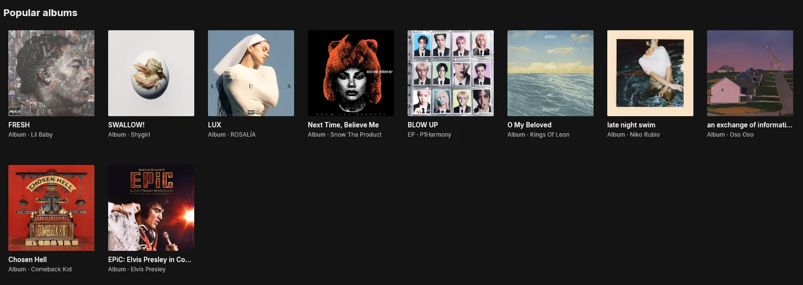
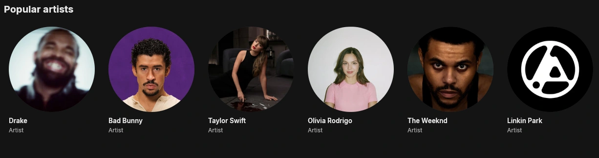
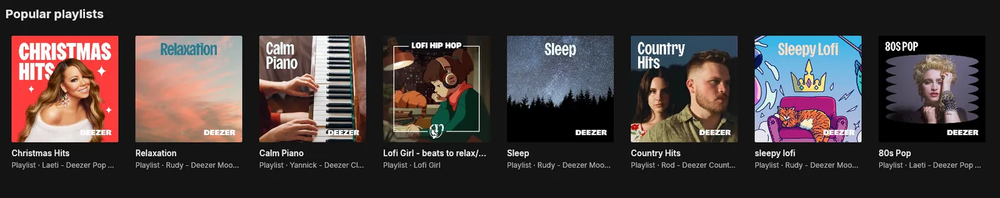

Orbits
Songs like an artist's, mixed with their own hits. A new mix every day.
Pulse
Full songs, no ads, and you don't need an account. Pulse uses around 150 MB of memory while it plays, and about 90 MB with Gaming mode on.
Pulse on Windows: searching for an artist and playing a song.
Most music apps are a web browser in disguise, and they take memory and CPU your game could use. Pulse is a native app, and Gaming mode turns off its extras while you play. The music sounds the same.
Rough numbers from my own PC while playing music. Yours will differ.
Cover art everywhere, round artist portraits, and playlists for every mood. Click a song's title to jump to its album, or right-click it to like it, share it, or see who made it.

Every album and single gets its cover, year and artist. Open one to play it in order, or shuffle it.

Follow the artists you like. Their pages show their newest release, top songs and albums, and artists like them.

Popular playlists for every mood, next to your own.
Your home page fills with what you play: quick shortcuts, the albums you keep coming back to, and Orbits, a daily mix built around each of your favorite artists.
Songs like an artist's, mixed with their own hits. A new mix every day.
Paste a link from YouTube, Spotify or SoundCloud and Pulse rebuilds the playlist. Share yours with a one-line code.
Your own covers, search, genre filters, sorting, "date added", and selection with Ctrl and Shift.
Save songs for when you're offline, and play the music files already in your Music folder, right next to everything you stream.
Download the installer, run it, and press play. It installs just for you, adds Pulse to the Start menu, and uninstalls cleanly from Windows Settings.
Windows may show "Windows protected your PC" the first time, as it does for any new app without a paid signing certificate. Click More info, then Run anyway. The first song you play takes a moment longer while Pulse sets up YouTube playback (about 70 MB, once).